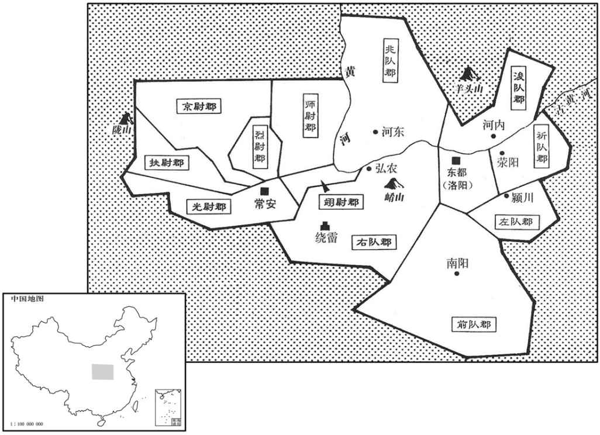

公元14年资治通鉴：本年记事、原文与白话对照
按原书编年位置阅读；追叙和史论不等于本年发生的事件。白话采用所据译本，缺译不以生成译文补齐。
卷37 · 本年记事
公元14年 · 汉孝平皇帝天凤元年
天凤元年〔（甲戌、一四）〕
上传原文的注释括号有异常，字符原样保留；无法可靠划分的段落默认全文显示。
本年事件索引（现代整理）

本年形势与背景参考图
春，正月，赦天下。
春季，正月，大赦天下。
莽下诏：「将以是岁四仲月行巡狩之礼，太官赍糒、干肉，内者行张坐卧；〔干，音干。内者令，时属共工。续汉志：内者令，掌布张诸衣物。师古曰：张坐卧者，谓帷帐茵席也。〕所过毋得有所给。〔师古曰：言自赍食及帷帐，以行在路所经过，不须供费也。〕俟毕北巡狩之礼，即于土中居洛阳之都。」群公奏言：「皇帝至孝，新遭文母之丧，颜色未复，饮食损少；今一岁四巡，道路万里，春秋尊，非糒、干肉之所能堪。〔糒，音备。干，音干。〕且无巡狩，须阕大服，以安圣体。」〔师古曰：阕，尽也；音口决翻。〕莽从之，要期以天凤七年巡狩；厥明年，即土之中，遣太傅平晏、大司空王邑之洛阳营相宅兆，〔相，息亮翻。宅，居也。坛域、茔界皆曰兆。〕图起宗庙、社稷、郊兆云。
王莽下诏：“兹定于本年每个季节的仲月周游全国，行巡狩之礼，太官携带干粮干肉，内者令布置帐篷床席，所经过的地方不要有什么供给。等结束北方的巡视活动之后，就在全国的中心洛阳定都。”众大臣奏报：“皇帝最孝顺，新近遭逢文母的丧事，容颜没有恢复，饮食减少。现在要一年四次出巡，路程万里，年岁这样高，不是吃干粮干肉所能适应得了的。请暂时不要去巡行视察，等待国丧期满，从而保养圣体。”王莽听从，改到天凤七年巡行视察，再过一年，前往全国的中心洛阳城。派遣太傅平晏和大司空王邑前往洛阳，选择基地，打算兴建皇家宗庙、土谷神社和祭祀天地的坛址。
三月，壬申晦，日有食之。大赦天下。以灾异策大司马逯并就侯氏朝位，〔免官，以侯爵就朝位。朝，直遥翻。〕太傅平晏勿领尚书事。以利苗男欣为大司马。〔如淳曰：利苗，邑名。欣，音欣。〕莽即真，尤备大臣抑夺下权，朝臣有言其过失者，辄拔擢。孔仁、赵博、费兴等以敢击大臣，故见信任，〔洪氏隶释曰：余家所收姓氏文字粗备；以诸书参考，颇多抵牾不合。姓苑云：费氏，禹后，音父位翻。李利涉编古命氏云：费氏出自鲁桓公少子季友，受邑于费。元和姓纂：费氏，亦音秘。姓林云：费氏，音蜚；夏禹之后。余尝考之，此字有两姓，音读不同，源流亦异。有一音蜚，嬴姓，出于伯益之后，史记所载费昌、费中、楚费无极、汉费将军、费直、费长房、费祎之徒，是其后也。其一音秘，姬姓，出于鲁季友，姓苑所载琅邪费氏，是其后也。然则姓苑、姓林、姓纂皆云夏禹之后，姓纂又云亦音秘，及谓琅邪费氏为直之后，皆其差误；而编古命氏以费将军、费祎之徒出于鲁季友，亦非也。师古曰：费，音扶昧翻。〕择名官而居之。国将哀章颇不清，莽为选置和叔，〔师古曰：特为置此官。余谓莽以国将主冬，故置和叔之官。将，即亮翻；下同。〕敕曰：「非但保国将闺门，当保亲属在西州者。」〔章，梓潼人，其亲属在西州。〕诸公皆轻贱，而章尤甚。〔言十一公皆为莽所轻贱，而章尤甚也。〕
三月壬申晦（疑误），出现日食。大赦天下。因日食天象变异之故，王莽颁策将大司马逯并免职，仅以侯爵身份参加朝会；免去太傅平晏主管尚书事的职务，任命利苗男王担任大司马。王莽正式登上皇位以后，特别防备大臣，限制、削弱大臣的权力，朝官有指责大臣错误的，总是受到提拔。孔仁、赵博、费兴等人因为敢于挟击大臣，所以受到信任，选择显赫的官职让他们担任。国将哀章行为颇不端正，王莽为他挑选设置了和叔之官，告诫道：“不仅要在公府里保全国将本人，还应当保全他在西州的亲属。”王莽对他所封的公都瞧不起，而以哀章为甚。
夏，四月，陨霜杀草木，海濒尤甚。〔师古曰：边海之地也。〕六月，黄雾四塞。〔塞，悉则翻。〕秋，七月，大风拔树，飞北阙直城门屋瓦。〔直城门，长安城西出南头第二门。〕雨雹，杀牛羊。〔雨，于具翻。〕
夏季，四月间，降了霜，冻死了草木，沿海尤其厉害。六月间，黄雾弥漫。秋季七月间，大风拔起树木，刮走了北阙直城门屋上的瓦。落下冰雹，打死了牛羊。
莽以周官、王制之文，置卒正、连率、大尹，职如太守；〔王制：三十国为卒，卒有正。十国有连，连有率。率，所类翻。守，式又翻。〕又置州牧、部监二十五人。分长安城旁六乡，置帅各一人。分三辅为六尉郡；〔师古曰：三辅黄图云：渭城、安陵以西，北至枸邑、义渠十县，属京尉大夫府，居故长安寺；高陵以北十县，属师尉大夫府，居故廷尉府；新丰以东，至湖十县，属翊尉大尺府，居城东；霸陵、杜陵，东至蓝田，西至武功、郁夷十县，属光尉大夫府，居城南；茂陵、槐里，至汧十县，属扶尉大夫府，居城西；长陵、池阳以北，至云阳、祋祤十县，属烈尉大夫府，居城北。帅，所类翻。〕河内、河东、弘农、河南、颍川、南阳为六队郡。〔师古曰：队，音遂。仲冯曰：河南，当为荥阳，莽所分为六队之一也。下文自有河南大尹更为保忠信卿。河东兆队，河内后队，弘农右队，荥阳祈队，颍川左队，南阳前队。〕更名河南大尹曰保忠信卿。〔更，工衡翻；下同。〕益河南属县满三十，置六郊州长各一人，人主五县。及他官名悉改。大郡至分为五，合百二十有五郡。九州岛之内，县二千二百有三。又仿古六服为惟城、惟宁、惟翰、惟屏、惟垣、惟藩，各以其方为称，〔公作甸服，是惟城；诸在侯服，是为惟宁；在采、任诸侯，是为惟翰；在宾服，是为惟屏；在揆文教、奋武卫，是为惟桓；在九州岛之外，是为惟藩。屏，必郢翻。称，尺证翻。〕总为万国焉。其后，岁复变更，一郡至五易名，而还复其故。吏民不能纪，每下诏书，辄系其故名云。〔按莽传：诏曰：「祈队，故荥阳，」是也。〕
王莽按照《周官》和《王制》的记载，设置卒正、连率、大尹，职务象太守一样。又设置州牧、部监二十五人。把长安郊区划分为六乡，每乡设置乡帅一人。把三辅地区划分为六尉郡，把河内郡、河东郡、弘农郡、河南郡、颍川郡、南阳郡作为六队郡。把河南郡大尹改名叫保忠信卿。增加河南郡属县达三十个。设置六郊州长各一人，每人管辖五县。其他官名全都改动。还将大郡划分，最多的划分为五个郡，合计共一百二十五个郡。九州的范围里，有二千二百零三县。又模仿古代的六服，把国土划分为惟城、惟宁、惟翰、惟屏、惟垣、惟藩，各以其方位称呼，总共有一万个封国。这以后，每年都有变动，一郡甚至改了五次名称，而还是恢复原来的名称。官吏和平民，无法记忆，每次下诏书，总要在新名之下附记原来的名称。
匈奴右骨都侯须卜当、伊墨居次云劝单于和亲，遣人之西虎猛制虏塞下，〔汉书作「西河虎猛制虏塞下。」师古曰：虎猛，县名。制虏塞，在其界。此逸「河」字。之，往也。〕告塞吏云：「欲见和亲侯。」和亲侯者，王昭君兄子歙也。〔师古曰：歙，音翕。〕中部都尉以闻，〔汉边郡置五部都尉，分治属县。〕莽遣歙、歙弟骑都尉、展德侯飒使匈奴，〔师古曰：飒，音立。〕贺单于初立，赐黄金、衣被、缯帛；绐言侍子登在，因购求陈良、终带等。单于尽收陈良等二十七人，皆械槛付使者，遣厨唯姑夕王富等四十人送歙、飒。莽作焚如之刑，烧杀陈良等。〔应劭曰：易有焚如、死如、弃如之言，莽依此作刑名也。如淳曰：焚如、死如、弃如者，谓不孝子也。不畜于父母，不容于朋友，故烧杀弃之。莽依此作刑名也。〕
匈奴右骨都侯须卜当、伊墨居次云，建议单于栾提咸与中国和亲。栾提咸同意，派人到西河郡虎猛县制虏塞，告诉边塞的官吏：“匈奴单于想见和亲侯。”和亲侯就是王昭君哥哥的儿子王歙。中部都尉奏报朝廷，王莽派遣王歙与王歙的弟弟骑都尉、殿德侯王飒出使匈奴，祝贺匈奴单于栾提咸即位，赏崐赐黄金、衣服、被褥、丝织品，欺哄说作为人质的单于的儿子栾提登还在人间，并趁机要求用钱财引渡陈良和终带等人。单于便把陈良等二十七人逮捕，全部带上刑具，装进囚车，交付中国使节。派厨唯姑夕王栾提富等四十余人护送王歙、王飒回国。王莽特别制定一种烧杀刑，把陈良等人活活烧死。
缘边大饥，人相食。谏大夫如普行边兵还，言「军士久屯寒苦，边郡无以相赡。今单于新和，宜因是罢兵。」校尉韩威进曰：「以新室之威而吞胡虏，无异口中蚤虱。臣愿得勇敢之士五千人，不赍斗粮，饥食虏肉，渴饮其血，可以横行！」莽壮其言，以威为将军。然采普言，征还诸将在边者，免陈钦等十八人，又罢四关镇都尉诸屯兵。〔莽置四关，各有镇都尉，领屯兵。〕
边境地区发生严重饥馑，出现了人吃人的现象。谏大夫如普巡视边境驻军，回来说：“士兵长期驻扎在寒苦之地，边郡没有东西供应。现在单于刚刚与我们和好，应该趁此机会解散部队。”校尉韩威建议说：“凭新朝的威力去吞并匈奴，就好象吃掉口里的跳蚤虱子一样。我愿意求得勇敢的士兵五千人，不要携带一斗粮食，饿了就吃敌人的肉，渴了就喝他们的血，可以在匈奴境内横冲直撞。”王莽认为他的话很豪壮，任命韩威作将军。然而采纳如普的意见，调回驻扎在边境的各将领。免去陈钦等十八人的将军职务，又撤回了四关镇都尉的屯兵。
单于贪莽赂遗，〔遗，于季翻。〕故外不失汉故事，然内利寇掠；又使还，知子登前死，怨恨，〔使，疏吏翻。还，从宣翻；又如字。〕寇虏从左地入不绝。〔师古曰：入为寇而虏掠。〕使者问单于，辄曰：「乌桓与匈奴无状黠民共为寇入塞，譬如中国有盗贼耳！〔黠，下八翻。〕咸初立持国，威信尚浅，尽力禁止，不敢有二心！」莽复发军屯。〔复，扶又翻；下同。〕
匈奴乌累若单于栾提咸贪图王莽的厚重礼物，所以外貌上仍保持汉朝时代与中国和睦的成例，事实上却不断侵扰劫掠。同时，匈奴使节从中国回去后，知道单于儿子栾提登已被处死，心怀怨恨，不断从东部边境一带攻击侵袭。中国使节向单于栾提咸诘问，栾提咸每次都回答：“乌桓跟匈奴的一些奸猾无赖，合伙干出这种坏事，侵入边塞，就像中国有强盗匪徒一样。我刚刚即位管理国家，威信还不高，我当尽力禁止，不敢有二心！”王莽再次派遣军队进驻北方边塞。
益州蛮夷愁扰，尽反，复杀益州大尹程降。〔【章：十二行本「降」作「隆」；乙十一行本同；孔本同。〔武帝开滇国为益州郡，属益州；莽属梁州。〕莽遣平蛮将军冯茂发巴、蜀、犍为吏士，赋敛取足于民，以击之。〔犍，居言翻。敛，力赡翻。〕
益州蛮夷因忧愁而骚扰，同时叛乱，击杀益州大尹程降。王莽派遣平蛮将军冯茂调发巴郡、蜀郡、犍为郡等地方官兵，粮秣军饷直接向百姓征收，进击益州郡叛乱民众。
莽复申下金、银、龟、贝之货，颇增减其贾直，〔贾，读曰价。〕而罢大、小钱，改作货布、货泉二品并行。〔货布，长三寸五分，广一寸；首长八分有奇，广八分；其圜好，径二分半；足枝长八分，闲广二分；其文右曰：「货」，左曰「布」，重二十五铢，直货泉二十五。货泉，径一寸，重五铢；文右曰「货」，左曰「泉」；文直一。孔颖达曰：案食货志，今世谓之「镏钱」，是也；边犹为货泉之字。大泉，即今四文钱也，四边并有文也。货布之形，今世难识；世人耕地犹有得者，古时一个准二十五钱也。余按古所谓泉布者，其藏曰泉，其行曰布，取名于水泉，其流行无不；无不则布之义也。王莽以为货二品，非古义。考异曰：食货志，改作货布在天凤元年。莽传在地皇元年，盖以大钱尽之年；至地皇元年乃绝不行耳，非其年始作货布也。〕又以大钱行久，罢之恐民挟不止，乃令民且独行大钱；尽六年，毋得复挟大钱矣。每一易钱，民用破业而大陷刑。
王莽又下令恢复金币、银币、龟币、贝币，对价值略加调整。取消大钱、小钱，改由新发行的货布、货泉二种钱币代替。但是，因为大钱流通已久，一旦废除，恐怕无法禁绝人们携带，于是特准百姓暂且使用大钱，以六年为期，六年后完全禁绝。每改变一次币制，百姓随着破产一次，往往因而陷于刑网。